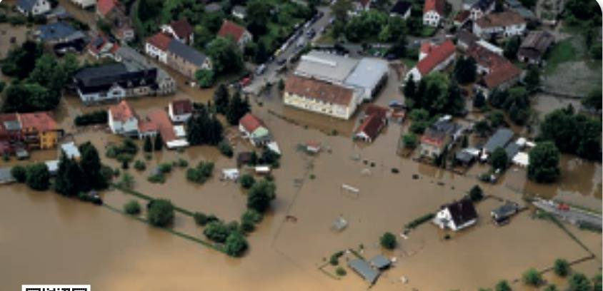

Cours standard adapté : mêmes objectifs que le programme CAP, textes courts, questions guidées, indices, corrigés, explications concrètes et audio sur les blocs.
3 séancesAudio sur les blocsRéponses guidéesExemples concrets
Mode d’emploi accessible
Lire dans l’ordre. Chaque document est suivi de ses questions. Les images aident à comprendre, mais le texte suffit pour répondre.
Utiliser les aides. Ouvrir l’indice pour démarrer, le corrigé pour vérifier, puis l’explication pour comprendre avec un exemple concret.
Séance 1 — Définir un risque majeur
Objectif. Identifier un risque majeur, ses causes et ses conséquences.
Compétences :C1
Traiter l’information : repérer une information utile dans un document.
C2
Analyser une situation : comprendre le problème, les personnes concernées et les causes possibles.
C3
Mettre en relation : faire le lien entre une information du document et une connaissance du cours.
Situation — Une inondation dans une commune

Une inondation illustre un risque majeur naturel.
Après de fortes pluies, une rivière déborde. Des rues sont coupées, des habitations sont inondées et les secours demandent aux habitants de rester à l’abri. La mairie diffuse des consignes de sécurité.
1. À partir de la situation,
1.1C2Identifier le risque présenté dans la situation.
Indice
Chercher l’événement qui menace les personnes et les biens.
Corrigé
Le risque présenté est une inondation.
Explication
Exemple : une pluie forte devient un risque majeur si elle provoque une crue, des dégâts et une mise en danger.
1.2C2Compléter les conséquences visibles.
Indice
Repérer ce qui arrive aux rues, aux maisons et aux habitants.
Corrigé
Rues coupées, habitations inondées, consigne de rester à l’abri.
Explication
Exemple : le risque majeur ne se limite pas au phénomène naturel ; il concerne aussi les effets sur la population.
Document 1 — Aléa, enjeu et risque majeur
Un aléa est un phénomène dangereux possible : inondation, tempête, accident industriel, séisme.
Un enjeu est ce qui peut être touché : habitants, écoles, routes, entreprises, environnement.
Le risque majeur existe quand un aléa peut toucher des enjeux importants et provoquer des dommages graves.
2. À partir du document 1,
2.1C3Associer chaque mot à sa définition.
Élément
Réponse
Aléa
Enjeu
Risque majeur
Indice
Se demander si le mot désigne le danger, ce qui est exposé ou le résultat.
Corrigé
Aléa : phénomène dangereux. Enjeu : personnes ou biens exposés. Risque majeur : aléa + enjeux + dommages graves.
Explication
Exemple : une rivière qui peut déborder est l’aléa ; les maisons proches sont les enjeux ; l’inondation d’un quartier est le risque majeur.
2.2C5Expliquer pourquoi une inondation peut devenir un risque majeur.
Indice
Utiliser les mots aléa et enjeux dans la réponse.
Corrigé
Une inondation peut devenir un risque majeur parce qu’un aléa naturel touche des habitants, des routes ou des bâtiments.
Explication
Exemple : si la crue se produit dans une zone sans habitant, les dégâts humains sont faibles ; dans une ville, les enjeux sont importants.
Je retiens. Un risque majeur associe un phénomène dangereux et des enjeux exposés. Les conséquences peuvent être graves pour les personnes, les biens et l’environnement.
Séance 2 — Identifier les risques et les informations locales
Objectif. Repérer les types de risques et les documents d’information utiles.
Compétences :C1
Traiter l’information : repérer une information utile dans un document.
C3
Mettre en relation : faire le lien entre une information du document et une connaissance du cours.
C4
Proposer une solution : choisir une action adaptée à une situation.
Document 2 — Les familles de risques majeurs
Les risques naturels viennent de phénomènes naturels : inondation, tempête, feu de forêt, séisme.
Les risques technologiques sont liés aux activités humaines : accident industriel, rupture de barrage, transport de matières dangereuses, accident nucléaire.
Les habitants peuvent s’informer grâce au DICRIM de leur commune, aux consignes de la préfecture, aux médias officiels et à Géorisques.
1. À partir du document 2,
1.1C1Classer les exemples dans la bonne famille.
Risque naturel
Risque technologique
Indice
Se demander si le danger vient surtout de la nature ou d’une activité humaine.
Corrigé
Naturel : inondation, tempête, séisme. Technologique : accident industriel, rupture de barrage, transport de matières dangereuses.
Explication
Exemple : une fuite chimique dans une usine est technologique ; une tempête est naturelle.
1.2C1Citer deux sources d’information fiables.
Indice
Chercher les noms des documents ou sites officiels.
Exemple : le DICRIM explique les risques présents dans une commune et les bons comportements à adopter.
Document 3 — L’alerte
En cas de danger, les autorités peuvent diffuser une alerte par sirène, message FR-Alert, radio, télévision ou réseaux officiels. Une alerte sert à donner des consignes : se mettre à l’abri, évacuer, éviter les déplacements ou écouter les informations officielles.
Pendant une alerte, il faut éviter de téléphoner sauf urgence vitale afin de ne pas saturer les réseaux.
2. À partir du document 3,
2.1C1Relever deux moyens d’alerte.
Indice
Chercher comment les autorités peuvent prévenir la population.
Exemple : FR-Alert peut envoyer un message sur le téléphone des personnes présentes dans une zone dangereuse.
2.2C4Choisir le bon comportement pendant une alerte.
Indice
Le bon comportement protège la personne et facilite le travail des secours.
Corrigé
Il faut suivre les consignes officielles.
Explication
Exemple : lors d’une inondation, rester à l’abri peut être plus sûr que sortir pour déplacer une voiture.
Je retiens. Les risques majeurs peuvent être naturels ou technologiques. Les informations fiables viennent des autorités et des documents officiels.
Séance 3 — Agir avant, pendant et après
Objectif. Proposer des mesures de prévention et des conduites à tenir.
Compétences :C3
Mettre en relation : faire le lien entre une information du document et une connaissance du cours.
C4
Proposer une solution : choisir une action adaptée à une situation.
C5
Argumenter : donner une idée et l’appuyer avec une raison.
Document 4 — Trois moments pour se protéger
Avant : s’informer, préparer un kit d’urgence, connaître les consignes, repérer les documents utiles.
Pendant : se mettre en sécurité, suivre les consignes officielles, éviter les déplacements et les appels inutiles.
Après : attendre la fin de l’alerte, éviter les zones dangereuses, signaler les besoins aux secours ou à la mairie.
1. À partir du document 4,
1.1C3Classer les actions dans le bon moment.
Avant
Pendant
Après
Indice
Se demander si l’action prépare, protège immédiatement ou organise le retour à la normale.
Corrigé
Avant : préparer un kit, lire le DICRIM. Pendant : se mettre à l’abri, suivre les consignes. Après : attendre la fin d’alerte, éviter les zones dangereuses.
Explication
Exemple : préparer une lampe et de l’eau se fait avant ; traverser une rue inondée pendant la crise est dangereux.
1.2C5Rédiger une consigne claire pour un camarade.
Indice
Utiliser un verbe d’action et une raison simple.
Corrigé
Exemple : “Reste à l’abri et écoute la radio officielle, car les consignes peuvent changer rapidement.”
Explication
Exemple : une bonne consigne est courte, précise et utile tout de suite.
Je retiens. La protection dépend de la préparation, du respect des consignes pendant l’alerte et de la prudence après l’événement.
Bilan final — Je vérifie mes connaissances
Lexique
Aléa phénomène dangereux possible.
Enjeu personne, bien ou environnement exposé.
Risque majeur risque rare mais aux conséquences graves.
DICRIM document communal d’information sur les risques majeurs.
FR-Alert message officiel envoyé sur téléphone en cas de danger.
Mise à l’abri action de se protéger dans un lieu sûr.